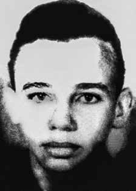

Emmanuel
Bezerra
dos Santos
CIRCUNSTÂNCIAS DA MORTE
Emmanuel Bezerra dos Santos morreu em 4 de setembro de 1973, junto a Manoel Lisboa de Moura, na cidade de São Paulo.
De acordo com a versão oficial, tanto Emmanuel quanto Manoel foram mortos em um tiroteio com agentes policiais. Segundo esta versão, observada no relatório do Inquérito Policial, do Departamento de Ordem Política e Social de São Paulo (Dops), Manoel teria informado à polícia um encontro com Emmanuel, recém chegado do Chile, no dia 4 de setembro de 1973, no Largo de Moema, em São Paulo.
Os agentes da repressão então montaram uma emboscada e aguardaram a chegada de Emmanuel. Ainda de acordo com esta versão, logo após o avistarem, deram-lhe voz de prisão e, neste instante, ele teria atirado nos agentes, que reagiram, desferindo tiros na direção dos dois. Emmanuel e Manoel teriam morrido quando estavam sendo levados para o Hospital de Clínicas. Tal versão ainda é apresentada na requisição do exame necroscópico de Emmanuel, assinada pelo delegado Edsel Magnotti, no laudo de exame de corpo de delito, assinada pelos médicos legistas Harry Shibata e Armando Cânger Rodrigues e, anos depois, no relatório do Ministério da Aeronáutica enviado ao Ministério da Justiça, em 1993, que reafirma a versão de que os dois militantes teriam sido mortos em um suposto confronto com os agentes dos órgãos de segurança.
Emmanuel e Manoel foram presos em Recife (PE), no dia 16 de agosto de 1973. Emmanuel foi levado para o Dops-PE e transferido para São Paulo pelo policial Luiz Miranda, e entregue ao delegado Sérgio Fleury. Em São Paulo, segundo denúncia de presos políticos na época, Emmanuel foi morto sob torturas no Destacamento de Operações de Informações – Centro de Operações de Defesa Interna (DOI-CODI-SP), ocasião em que o mutilaram, arrancando-lhe os dedos, umbigo, testículos e pênis.
Em depoimento à Comissão Estadual da Verdade do Estado de São Paulo, prestado durante audiência pública no dia 6 de setembro de 2013, o ex-preso político Edival Nunes Cajá destacou o fato de que as forças de repressão montaram uma farsa para encobrir as mortes dos referidos militantes em dependências do Estado. Os dois militantes foram enterrados como indigentes no Cemitério de Campo Grande, em São Paulo.
Em 1992, seus restos mortais foram exumados. Neste mesmo ano, em 12 de julho, Dom Paulo Evaristo Arns celebrou missa na Catedral da Sé em homenagem a Emmanuel e também em homenagem a Helber José Gomes Goulart e Frederico Eduardo Mayr, situação em que estavam presentes os restos mortais identificados de todos esses militantes. No dia seguinte, sua ossada foi enviada para Natal (RN).
O corpo de Emmanuel Bezerra dos Santos foi sepultado no dia 14 de julho em na sua cidade, São Bento do Norte (RN).
Emmanuel Bezerra dos Santos died on September 4, 1973, together with Manoel Lisboa de Moura, in the city of São Paulo.
According to the official version, both Emmanuel and Manoel were killed in a shootout with police officers. According to this version, observed in the report of the Police Inquiry, from the Department of Political and Social Order of São Paulo (Dops), Manoel would have informed the police of a meeting with Emmanuel, who had recently arrived from Chile, on September 4, 1973, in Largo de Moema, in São Paulo.
The repression agents then set up an ambush and waited for Emmanuel's arrival. Still according to this version, soon after they spotted him, they arrested him and, at that moment, he allegedly shot at the agents, who reacted, firing shots in the direction of the two. Emmanuel and Manoel would have died when they were being taken to the Hospital de Clínicas. This version is still presented in the request for Emmanuel's necroscopic examination, signed by delegate Edsel Magnotti, in the corpus delicti examination report, signed by coroners Harry Shibata and Armando Cânger Rodrigues and, years later, in the report from the Ministry of Aeronautics sent to the Ministry of Justice, in 1993, which reaffirms the version that the two militants had been killed in an alleged confrontation with agents of the security agencies.
Emmanuel and Manoel were arrested in Recife (PE), on August 16, 1973. Emmanuel was taken to Dops-PE and transferred to São Paulo by police officer Luiz Miranda, and handed over to police chief Sérgio Fleury. In São Paulo, according to complaints from political prisoners at the time, Emmanuel was killed under torture in the Information Operations Detachment – Internal Defense Operations Center (DOI-CODI-SP), when they mutilated him, cutting off his fingers, navel, testicles and penis.
In testimony to the State Truth Commission of the State of São Paulo, given during a public hearing on September 6, 2013, former political prisoner Edival Nunes Cajá highlighted the fact that the repression forces set up a hoax to cover up the deaths of the aforementioned militants on State premises. The two militants were buried as paupers in the Campo Grande Cemetery, in São Paulo.
In 1992, his remains were exhumed. That same year, on July 12, Dom Paulo Evaristo Arns celebrated mass at the Sé Cathedral in honor of Emmanuel and also in honor of Helber José Gomes Goulart and Frederico Eduardo Mayr, a situation in which the identified remains of all these militants were present. The following day, his bones were sent to Natal (RN).
The body of Emmanuel Bezerra dos Santos was buried on July 14th in his city, São Bento do Norte (RN).
Emmanuel Bezerra dos Santos falleció el 4 de septiembre de 1973, junto con Manoel Lisboa de Moura, en la ciudad de São Paulo.
Según la versión oficial, tanto Emmanuel como Manoel murieron en un tiroteo con agentes de policía. Según esta versión, observada en el informe de la Investigación Policial, del Departamento de Orden Político y Social de São Paulo (Dops), Manoel habría informado a la policía de un encuentro con Emmanuel, recién llegado de Chile, el 4 de septiembre de 1973, en Largo de Moema, en São Paulo.
Los agentes de represión prepararon entonces una emboscada y esperaron la llegada de Emmanuel. Aún según esta versión, poco después de verlo, lo detuvieron y, en ese momento, presuntamente disparó contra los agentes, quienes reaccionaron disparando en dirección a los dos. Emmanuel y Manoel habrían muerto cuando eran trasladados al Hospital de Clínicas. Esta versión aún está presente en la solicitud de examen necroscópico de Emmanuel, firmada por el delegado Edsel Magnotti, en el informe de examen del corpus delicti, firmado por los forenses Harry Shibata y Armando Cânger Rodrigues y, años después, en el informe del Ministerio de Aeronáutica enviado al Ministerio de Justicia, en 1993, que reafirma la versión según la cual los dos militantes habían muerto en un supuesto enfrentamiento con agentes de los organismos de seguridad.
Emmanuel y Manoel fueron detenidos en Recife (PE), el 16 de agosto de 1973. Emmanuel fue llevado al Dops-PE y trasladado a São Paulo por el policía Luiz Miranda, y entregado al jefe de policía Sérgio Fleury. En São Paulo, según denuncias de presos políticos de la época, Emmanuel fue asesinado bajo tortura en el Destacamento de Operaciones de Información – Centro de Operaciones de Defensa Interna (DOI-CODI-SP), cuando lo mutilaron, cortándole los dedos, el ombligo, los testículos y el pene.
En testimonio ante la Comisión Estatal de la Verdad del Estado de São Paulo, prestado durante una audiencia pública el 6 de septiembre de 2013, el ex preso político Edival Nunes Cajá destacó el hecho de que las fuerzas de represión montaron un engaño para encubrir las muertes de los militantes antes mencionados en locales del Estado. Los dos militantes fueron enterrados como indigentes en el cementerio de Campo Grande, en São Paulo.
En 1992 sus restos fueron exhumados. Ese mismo año, el 12 de julio, Dom Paulo Evaristo Arns celebró misa en la Catedral de la Sé en honor a Emmanuel y también en honor a Helber José Gomes Goulart y Frederico Eduardo Mayr, situación en la que estuvieron presentes los restos identificados de todos estos militantes. Al día siguiente, sus huesos fueron enviados a Natal (RN).
El cuerpo de Emmanuel Bezerra dos Santos fue enterrado el 14 de julio en su ciudad, São Bento do Norte (RN).